|
|
Большой Мамай - гора Поляна - речка Осиновка (19-20 мая 2007)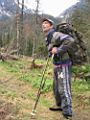 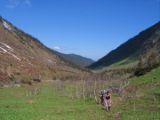 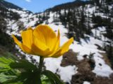 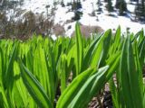 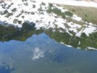 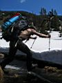 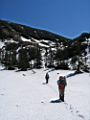 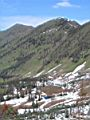 Дальше намного интереснее - началась терра инкогнита :) Новые места всегда интересно посещать, душа радуется, когда смотришь на маленькие горные озера, поляны, ручьи. Солнечные склоны с цветами, а напротив теневые склоны со снегом. Время контрастов. Тропа под снег нырять стала, пора надеть гамашЫ. Так по сплошному снегу и вышли на перевал, позади Мамай, впереди р.Выдриная. Ну а нам надо направо, на гору Поляна. Месить снег через весь цирк сильно напряжно показалось, решили залезть на растаявший гребень. Залезли, там немного по большому стланику поковырялись и вышли на ровное место - камни, мелкая растительность, прошлогодние ягоды и подъем до самой вершины. 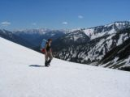 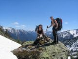 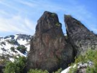 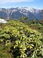 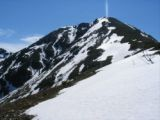 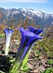 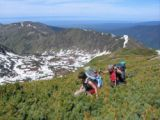 Высота 1756 метров, время 5 вечера. Вокруг Красота - горная страна Хамар-Дабан и Батюшка Байкал! Отлично просматривается долина р.Осиновки, пик Нефтехимиков, даже водопад на руч.Водопадном видно :) Планируем завтра на него сбегать, посмотреть. Видно устье Ангары, Листвянку. Отдохнули с кока-колой, спасибо Макс, не дал помереть от жажды :) Телефон ловит сигналы БВК, звоним родным и близким. Пора спускаться, похолодало уже... 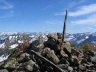 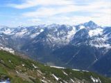 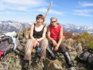 Зимой у фрирайдеров минуты полета с горы в счет жизни не записываются. Летом же у туристов спуск с горы это какой-то... какая-то... ладно, не буду ругаться. Были конечно и приятные моменты, ну там луга альпийские, цветочки, виды красивые, следы медвежьи на снежниках... Ну не перестроилось еще сознание после зимы, даже в мыслях не было тратить на спуск несколько часов! А вона как вышло. Короче говоря, от вершины траверснули немного на юг, вышли на гребень и по нему в сторону Осиновки. Когда лафа в виде лугов закончилась, началась зопа в виде кустов, стланика, ручьев, обрывчиков и прочего таежного бездорожья. 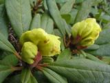 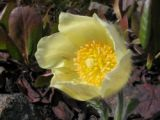 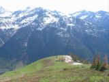 В итоге уставшие, грязные и ободранные добрались до Осиновки и поняли, что это все таки река, а не ручей какой-нибудь. Просто так не перейдешь с разбега. Пришлось табориться на восточном берегу. Палатка, ужин, пописярику, чай у костерка. Стемнело, поиски переправы отложили на завтра. Задача-минимум на сегодня выполнена: Поляну посмотрели, к Осиновке спустились. На утро отсыпались, отдыхали. Водопад отложили до следующего похода на Осиновку. Сегодня надо собрать мешок черемши и переправиться на другой берег, там тропа. А если не переправимся, то опять по бездорожью придется прорываться, можем и на электричку опоздать. Удобное место для переправы нашлось ниже по течению, минут через 20-30 от стоянки на реке есть островок, еще чуть ниже река разделяется на несколько потоков, там и перешли. Нашли тропу и побежали по ней. Хотя конечно сильно по ней не разбежишься, препятствий хватает. Еще следы медвежонка видели, прямо на тропе. Черемшанные поляны и луга видели! Ручейки и ручьи тоже скучать не давали. Особенно через Гремячий очень долго перебирались, ползком по узкому высокому бревнышку :) Бревнышко выше по течению было. Еще клеща из Макса доставали, впился сцуко! 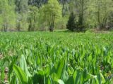 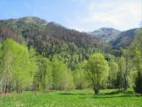 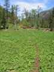 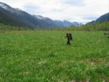 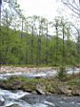 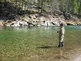 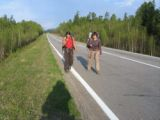 В итоге, как и предсказывала Аня, опоздали на электричку :) Но как-то особо никто и не переживал по этому поводу. Устроили перекусон на берегу, отдохнули. Уехали автостопом - остановился знакомый иркутский альпинист, спасибо ему! Самое приятное, это конечно прогулки в высокогорье, по гольцам, выше только небо :) Май 2007 |